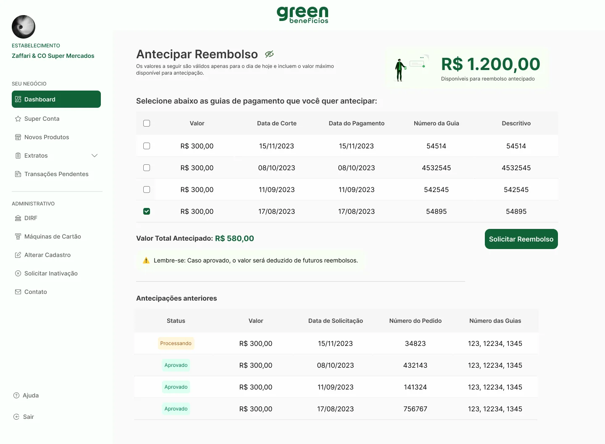

Green Benefícios | 2024
Do suporte ao autoatendimento: construindo o Portal do Estabelecimento
Uma rede de 150.000 estabelecimentos gerava dezenas de ligações de suporte por dia por informações que deveriam estar ao alcance de qualquer usuário. Liderei o design da pesquisa ao protótipo validado.
- Empresa
- Green Benefícios
- Meu papel
- Product Designer, end-to-end
- Time
- PO, Engenharia, Marketing, Suporte, colega Product Designer
- Plataforma
- Portal web (B2B)
- Ferramentas
- Figma, FigJam, Miro, Maze

O problema
A Green Benefícios opera uma rede de 150.000 estabelecimentos credenciados: os negócios onde os trabalhadores usam seu cartão de benefícios Green. Cada transação processada pelo cartão dispara um ciclo de reembolso de 28 dias. A Green retém os valores e os repassa ao estabelecimento após esse período.
Esse modelo criava um padrão previsível de confusão. Os estabelecimentos não tinham visibilidade sobre seus próprios dados financeiros. Nenhuma forma de verificar quando o reembolso chegaria. Nenhuma forma de entender quanto receberiam. Nenhuma forma de cadastrar uma nova máquina de cartão sem ligar para o suporte.
O resultado: o time de suporte recebia em média 15 ligações por dia sobre status de reembolso, cada uma durando cerca de 5 minutos, mais 2 ligações diárias sobre cadastro de máquinas, cada uma levando até 20 minutos. Mais de uma hora de trabalho evitável de suporte, todo dia.
Meu papel e restrições
O que era meu
Investiguei o problema através de pesquisa, construí o case do produto com os stakeholders e liderei o design da descoberta até o protótipo validado. Também cocriei o design system junto com uma colega do time do produto voltado ao trabalhador, para que todos os produtos da Green tivessem a mesma aparência e o mesmo comportamento.
Restrições
A liderança não queria que a estrutura de taxas da Green fosse exibida com clareza aos estabelecimentos. Minha posição era que transparência gera confiança, especialmente com uma retenção de 28 dias envolvida. Fui voto vencido. Documentei meu raciocínio, aceitei a decisão e direcionei minha energia para tornar todo o restante o mais claro e útil possível.
Descoberta e pesquisa
Comecei onde o atrito era mais visível: o time de suporte. Conversas com agentes de suporte e credenciadores, que tinham contato direto com os estabelecimentos, revelaram um padrão consistente: os estabelecimentos não estavam confusos sobre o produto. Simplesmente não tinham acesso aos seus próprios dados.
Também realizei análise competitiva para entender o que plataformas similares ofereciam.
Três necessidades centrais emergiram
Visibilidade financeira
Quando chega meu reembolso e quanto será?
Autonomia operacional
Como cadastro uma nova máquina sem ligar para ninguém?
Clareza sobre o modelo de reembolso
Por que demora 28 dias e como são calculadas minhas taxas? Parcialmente atendida: as taxas seguiram opacas por decisão do negócio, mas prazos e valores ficaram totalmente visíveis.
O desafio de design
Como dar a 150.000 estabelecimentos a visibilidade financeira e a autonomia operacional que precisavam, reduzindo a carga do suporte e construindo confiança em um produto que retém seu dinheiro por 28 dias?
Opções que considerei
Decisões principais
Começar com um MVP, não com um portal completo
Mapeei todas as funcionalidades possíveis e conduzi um exercício de priorização com o time de suporte, credenciadores e stakeholders. Isso produziu um escopo claro de MVP e um roadmap de design com marcos definidos.
Sessões de cocriação para tópicos sensíveis
Onde os interesses do negócio e as necessidades dos usuários estavam em tensão, conduzi sessões estruturadas de cocriação com o diretor de tecnologia e lideranças de marketing. Os stakeholders viraram parte do processo, em vez de aprovadores no final.
Jobs to be done como framework organizador
Mapeei cada funcionalidade a uma tarefa específica que o estabelecimento precisava realizar, para que o portal ficasse focado em tarefas, não em despejo de informação.
Validação antes do handoff
Duas rodadas de testes: sessões qualitativas com 7 usuários e um estudo no Maze com 15 participantes. Vários pontos que pareciam claros no design eram confusos na prática, especialmente a visualização do prazo de reembolso. Ambas as rodadas informaram revisões antes do handoff.
A solução
Um portal de autoatendimento web dando aos estabelecimentos acesso em tempo real aos seus dados financeiros e operacionais. Foi desenvolvido junto com um design system compartilhado criado com a colega do time do trabalhador, para que os produtos da Green falassem a mesma linguagem visual com todos os tipos de usuário.
Dashboard de reembolso
Datas de pagamento, valores e detalhamento de transações.
Gestão de máquinas
Cadastrar, atualizar ou remover máquinas sem contatar o suporte.
Informações de conta e contrato
Acessíveis sem ligação para o suporte.

Resultados e impacto
Saí durante a fase final de desenvolvimento. Os estabelecimentos destacaram a visibilidade do reembolso como algo que esperavam há muito tempo.
Que bom, agora sei quando vou receber, ficou muito bom e fácil de usar.
O que eu faria diferente
Teria lutado mais pela transparência das taxas, não indefinidamente, mas com um argumento mais estruturado. Olhando para trás, apresentei minha posição uma vez em uma reunião. O que deveria ter feito é retornar com dados de pesquisa mostrando a correlação direta entre opacidade financeira e volume de ligações para o suporte. A preocupação do negócio era proteger a percepção de margem; meu contra-argumento deveria ter sido enquadrado em termos de confiança e risco de churn. Princípios de UX sozinhos não iam ganhar aquela sala.
Este projeto também me ensinou que identificar o problema é apenas metade do trabalho. A outra metade é construir confiança organizacional suficiente para que as pessoas deixem você resolvê-lo. As sessões de cocriação fizeram esse trabalho: os stakeholders pararam de aprovar o projeto e passaram a construí-lo comigo.